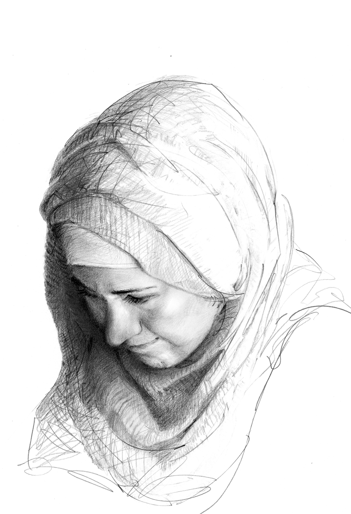
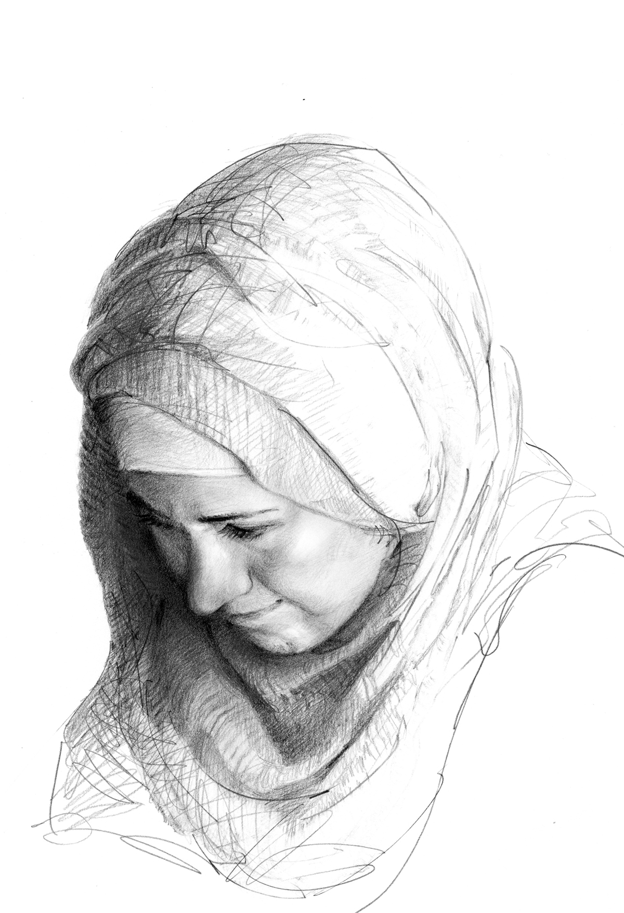

![28/100 Paul, charcoal on paper Paul is a tall and skinny guy works at a fancy restaurant near the art gallery where I work. He is always smoking and eating junk foods on the street during his breaks. One day I finally got to talk to him and he said: “I’m 21, born and grew up in Toronto, besides woking here as a cook, I run a small recording studio and the business is getting more and more established. To save my time, I keep my wardrobe small and dress only in black. This habit was inspired by Mark Zuckerberg (who buys many t-shirts that are exactly the same)! I also read lots of business articles and entrepreneur’s interviews. This full-time job is to pay bills while I’m reaching my goal as a musician/producer.†I remember how his eyes were so full of innocence, sincerity and excitement saying these lines! After our short encounter, I switched to a different location to work and never see him again. Phoned the restaurant but was informed that he quit. Guess I can’t get more of his stories but I wish he’s now running the studio full-time with his music dream blossoming. 🎹](images/Paul.jpg)

![29/100 Helen, graphite & charcoal on paper “…I know because I’ve wandered off, thousands of miles from what I already knew, to places where it would be so so easy to feel alone. Places where my my language was of no use, where cell phone signal was as common as a unicorn sighting; where familiar was something you’d crave like your favourite drug. And I survived. More than that, I learned to love those moments. It wasn’t always easy. And It still isn’t. But when you really stop and get honest, you are NEVER alone. We are a collective. Every moment you’ve shared with another human can continue to exist within you if you want it to. And what’s really transformed my life is figuring out that if you can find a way to walk with that invisible army of friends and lovers and hearts behind you, not only will you not be alone, but there’s a line-up of gorgeous, new soldiers that can't wait to enlist. Learn to love you, all alone, and people will wage war in your favor. Sitting there, in that moment, I had no proof that I would make it to where I am today. But in just one tiny year I’ve become a certified yoga practitioner, wandered up the Himalayas, re-started my acting career, starred in my first commercial and film, become a business owner & mentor (which has now expanded to a team of five incredible women!!), learned to love again, co-founded a successful charitable initiative and community platform and am about to take off to Las Vegas, DC and New York where I will continue to expand my business, my relationships, and most importantly, myself. I share all that only because I want you really know that we're alone in only one thing, and that’s creating a vision of what we want our lives to look like: How big and how beautiful. THERE'S NO LIMIT.… If you can dream it, you can do it. Your thoughts really do become things! So why not take today to think about what’s really possible? Because I promise you, IT IS POSSIBLE. It might not feel like it. It might be a terrifying and trying journey, but the only thing that might be more painful... is never actually trying at all. You’re not alone. Go get 'em.†- Helen, entrepreneur/actor/ writer Toronto/New York 💋](images/Helen.jpg)
![7/100 Amy, 2016, graphite and charcoal on paper. ''Despite the fact that I exhausted myself financially and emotionally from my ex-husband and his new family from China, I could never stop helping them. It's how I was raised. I can only work hard and stay positive for my children despite the trauma--the divorce and debts from my ex. I choose to be positive, hardworking and helpful for the hope that my daughter will step out from the shadows of her childhood.'' - Amy, secretary/ single mom with two children from Taiwan, lives and works in Toronto. ☔ï¸](images/Amy.jpg)

![16/100 Me: ''What did it feel like when you were in your lowest point of life and all the sudden you reached the highest?'' 🚀 Shevy: ''All I can say is I was going through a transition and I was deeply aware of the shift which made it that much more intense. Did I know this light was at the end of the tunnel? No! The coolest part is that the universal truths have been revealed to me - the darkest part of night is just before dawn breaks. My name in Hebrew means 7th daughter, not because they ran out of names but because as my dad says ''all sevens are beloved''. We just had a reunion last week, all 14 of us together celebrating the weddings of two sisters :) first time in 15 years and you would think things changed, but mostly we all just took our own places in the family as were the good old days :) After many years travelling the world and getting to know myself better, what I've learned most is there's nothing truer and greater than arriving home.'' - Shevy, Jewish healer/businesswoman/wonder woman from Sydney, Australia ☀️](images/Shevy.jpg)
![Aunt, graphite on paper I also touched up this piece and asked my aunt: ''if your life could restart, what would you choose to undo? She said: ''I've thought about this numerous times. Rather than changing anything, I've embraced it all and believed in karma. What goes around comes around. I've seen Karma come after everyone eventually. How people treat you is their karma; how you react is yours.'' This powerful woman sacrificed her entire youth to support both her own family as well as her second family- financially, emotionally and physically-- all while fearing that she might be sent away again. Early on, she was adopted by a poor peasant family as her original family couldn't afford to raise her. Since her early 20s, she faced ruthless shaming from her community because she chose to divorce an unfaithful husband. Life was difficult, but she kept silent and worked hard to educate her only daughter. There is no woman who cared for me and my sister quite as well as she did. For a woman who's sole reason for survival is to raise her child and care for her loved ones. I was never able to sense her suffering from severe depression because she never complained. An exceptional tailer, she was always sewing clothes, strewing them across the house in piles and piles. Life was extremely difficult for uneducated Taiwanese single mothers who belonged to the last generation. Taiwan's patriarchal society did not lend women much respect, and requiring them to work with their hands without rest. Despite her tight schedule, she exuded a wisdom and a unique grace— an incredible intelligence and determination to learn. It is from her that I learned creativity as well as several other life lessons. As she always says ''I pray for the people I love and the ones who have made wrongful assumptions about me. I hope the universe brings good karma and solves this negativity, leaving everyone with peace.'' 🐳](images/Aunt-Dada.jpg)

![15/100 Me: ''Fred, how could you manage to stay so positive and crack jokes all the time while being in a wheelchair in the hospital for so long?'' Fred: ''Ha, I discovered that I can't fly. I tried but it didn't work. I used to work with many staffs here from where I worked before. They all want me to put my name down to apply a job here. There are also lots of visitors and it's been wonderful. Jojo (his wife) visits me everyday for several hours and we go for walks. She pushed me in my wheelchair and thought I've lost some weight. The food in the hospital is too boring but I'll get a pass to have dinner with with my son next week. He's visiting me from Jasper.'' Me: What's the toughest time in your life? Fred:...(5 minutes passed by) I don't know! I'm having a wonderful life! Me: Okay, what's your saddest moment then? Fred: When Jojo and I traveled to India, we saw mothers begging with their babies. The babies were already dead. I didn't know for how long, maybe one or two days but they had to beg for food for other children. That's pretty much the worst thing to see. From our perspective, we have no idea and this goes on. 🌧](images/Fred.jpg)


![17/100 Bridget, 2016, graphite and charcoal on paper ''The thought of anything bad happening to my mom makes me anxious. I worry that maybe she didn't drive home safely from work...maybe she forgot to lock the front door - lots of irrational thoughts. I jokingly (not so jokingly) refer this as onset adult separation anxiety. She's become aware of my anxiety (who wouldn't after getting 'you good?' texts at 4am). So when I text her now, she usually sends me something short and reassuring. Most recent one: no need for worries. All good here. You've still got me and my persistent prayers.'' - Bridget, graphic & web designer, born in Uganda, grew up in Switzerland and now resides in Toronto. 🏳️‍🌈 .](images/Bridget.jpg)


 



About Me

Alicia Chen
Alicia Chen was born in Taiwan and became a new immigrant to Canada in 2015. Chen’s art journey started internationally from Taipei to Vancouver, New York to Toronto, where she presently resides. Chen spends much of her time collaborating and working with art professionals from recognizable institutions and building strong relationships within the art community. Based off of her rich and unique life experiences as an artist, art educator, young business entrepreneur and curator, she creates artwork cemented in the act of storytelling, showing unique capability for capturing the essence of her subjects. For Chen, art is a way of visually documenting her life through the connections she forms and infusing it with meaning. Art is a way of evolving oneself and empowering the minority. With her art gallery curating and marketing background, she is also as an active curator in Toronto’s Asian Canadian communities involving in conducting and coordinating cultural events and film festivals between Taiwanese bureaucracy and Toronto-based charity and nonprofit organizations where she aim to bring diversity together and to make social changes.
mail: alicia100faces@gmail.com
instagram: https://www.instagram.com/100faces/
Skills
🌱 Toronto curator/artist
🌿 drawing 100 faces
🌲 sharing 100 stories of struggles